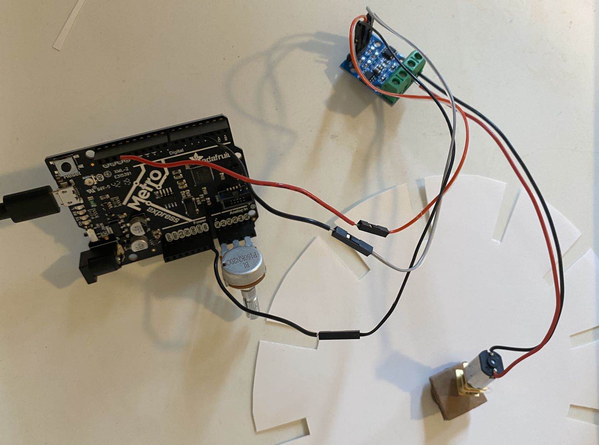

In today's class, I learnt to use Arbuino to communicate with my metroboard. Because I did not have any experience with coding before, coding on Arduino was a little confusing at the beginning. I learn about the difference between "digital" and "analog". "Digital" marks a binary operation (ex. low and high) yet "analog" quantitatively defines it (ex. a number between 0-255). I used the following code as an example, trying to understanding the basics about Arduino step by step. I felt a lot better after this simple example, as the structure of it can also be applied in more complicated tasks.
I also tried to change the code for vairous commands, such as speed and direction.
I then learnt about how to drive a motor with a L9110 motor drive. I chose to working with the stronger Canon motor. The key for me was to make sure that ground (GND) and power input are tightly connected to proper positions.
Another useful skill I learnt was to change the speed of the motor by a potentiometer. The potentiometer acted as a voltage divider. As its resistance varies, the voltage was divided by different ratios between the motor and the potentiometer, resulting in different speeds on the motor. Here is a picture of the finished circuit.
 I experimented the vairous speed with a piece of fan-shaped cardboard.
For the assignment, I made a kinetic sculpture inspired by a phenakistoscope, a traditional animation device. It uses the concept of Persistence of Vision to present a animated design.